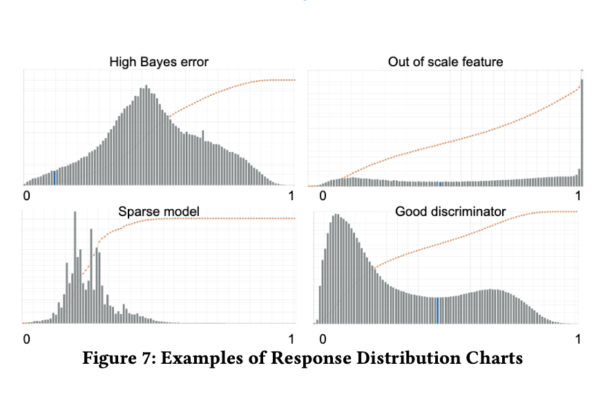
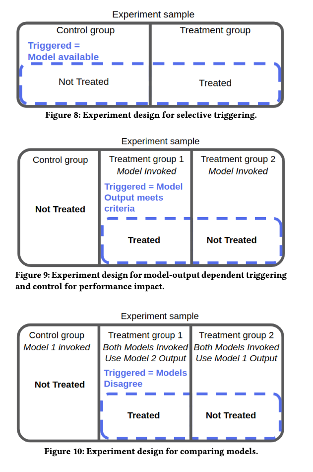

Or download.
First published in KDD from booking.com, the paper described its lessons from deploying Machine Learning models in their production service. It provided some intriguing insights. I believe many are very valuable to understanding applying Machine Learning in real-world scenarios.
Here are some of my takeaways.
1. Model Families: Machine Learning is Applied Everywhere In The Service
Booking.com uses an abundance of Machine Learning models in its website service. Example includes:
- Traveller Preference Models: predict the users’ flexibility in terms of traveling date, property location, property price.
- Traveller Context Models: gives the context of the traveler. E.g., if one’s traveling for family, with friends, or for business. This data can be used to optimize recommendations and user experience at the website.
- Item Space Navigation Model: gathers information about user interactions with the website to optimize the experience.
- User Interface Optimization Models: optimizes font sizes, number of items in the list, background colors or images, with Machine Learning models based on user context.
- Content Curation: curates content from different sources and formats of information to best display to human users.
- Content Augmentation: based on user context, predicts the best value for the end-user and predicts the reservation price in the future.
From experience in the paper, all model families can provide value in the real world. Though some values are hard to quantify, the multiplying effort is clear.
What struck me most from this section is the number of models which is deployed for a service and how many aspects of user experience can be modeled, optimized, and fine-tuned with the power of Machine Learning.
Everything we see now on modern websites can be decided by a Machine Learning model behind it, and it learns our interactions with it to feedback our experience.
2. Modeling: Offline Model Performance Is Just A Health Check
The one-sentence takeaway: model performance offline can not be directly translated to business value, i.e., a model that excels in performance in the lab doesn’t necessarily do well in the real world!
There are some possible explanations for this effect. For example, the saturation of a model: a model cannot drive business value to infinite after you optimize it to a threshold. Or the uncanny valley effect (which I found to be interesting): when you optimize a model too well, it can scare the users and bring negative value.
As the paper summarizes, the offline model performance can be entirely uncorrelated to business outcomes!
3. Modeling: Before Solving A Problem, Design It
This section introduces the experience of designing Machine Learning models and the challenges.
For example, when modeling very subjective concepts, target variables are not given as ground truth. They are constructed. Therefore some setups are harder than others from a learning perspective. For some setups, data is closer to the concept we want to model.
Another common problem is the Selection Bias issue. For example, if you gather data by the user filling in the questionnaire, the data collected is strongly biased toward those who fill in.
The paper provided a mouthful to explain the detection of Selection Bias:
Diagnosing selection bias is straightforward: consider a sample of the natural observation space (users or sessions in the dates flexibility case), we can then construct a classification problem that classifies each observation into the class of the observations for which a target variable can be computed and the class of the observations for which a target variable cannot be computed. If this classification problem is easy (in the sense that a simple algorithm performs significantly better than random), then the bias is severe and must be addressed.
The way I understand it: construct a classification problem to classify if the target variable can be computed (e.g., those who fill in the questionnaire) and those who cannot. And if the classification is easy (better than random), it means the selection process (in this case, the questionnaire filter) is not random!
Coming up with better models to unlock business values can require many iterations.
4. Deployment: Time Is Money
This section introduces an important observation that website response speed correlates to user conversion.
Visual inspection shows a clear trend, in which an increase of about 30% in latency costs more than 0.5% in conversion rate (a relevant cost for our business).
The paper introduces some infrastructure optimization to amortize latency (redundancy, caching, etc.) and also emphasizes how some simple models (e.g., linear models) can actually outperform more accurate but slower models.
5. Monitoring: Unsupervised Red Flags
This section provides a great experience in monitoring model output based on output distribution and how it can be an indicator of model health in production.

For example, quoted from the original paper:
- A smooth unimodal distribution with a central mode might indicate high bias in the model or high Bayes error in the data
- An extreme, high frequency mode might indicate defects in the feature layer like wrong scaling or false outliers in the training data
- Non-smooth, very noisy distributions point to too excessively sparse models
- Difference in distributions between training and serving data may indicate concept drift, feature drift, bias in the training set, or other forms of training-serving skew.
- Smooth bimodal distributions with one clear stable point are signs of a model that successfully distinguishes two classes
6. Evaluation: Experiment Design Sophistication Pays Off
This section introduces its experience through Experimentation through Randomized Controlled Trials (RCT). The experiment design and analysis gives a huge boost to understanding the data collected from the website and to the development of Machine Learning models.
The large majority of the successful use cases of machine learning studied in this work have been enabled by sophisticated experiment designs, either to guide the development process or to detect their impact.
The paper introduces a couple of methods for designing experiments for Machine Learning products.
Terminology for understanding trigger-based experiment process:
- Treatment: whether the change is applied to the end-user. If a user is treated, then she sees the studied change applied to the website (as compared to the control group.)
- Triggered: whether the user should be included in the final analysis of the data, based on the conditions of her data.

Experiment design:
- Selective Triggering: Dividing the population into control and treatment groups. And trigger the users whose data is available for model features among the treated and non-treated.
- Model-output Dependent Triggering: The treatment criteria might depend on one model output. Divide users into the control group where the model is not invoked and where the model is invoked. And where the model is invoked, further divide users into group 1: treatment, and group 2: non-treatment, where group 2 users are not treated even if the model output satisfies. Then the experiment is limited to users whose model satisfies.
- Comparing Models: To evaluate a new model 2 against model 1, create a control group where only model 1 is invoked. Create experiment groups where both models are invoked, with group 1 uses model 2 output, and a compare group 2 which uses model 1 output. And only trigger the users where the two models disagree.
In this way, we’re limiting the experiment subjects that are most interesting to model performance and limiting noise in the dataset.
Summary
This paper shares great experiences in understanding and tackling Machine Learning challenges in real-world services. And it provides guidance in designing and analyzing Machine Learning models in production.